WEEKLY FIELD NOTES / 2026.10.29
解析の数字を、
振り返りの道具へ。
実際の解析結果をワイヤーフレームへ。
「どんな画面になる？」を、操作して確かめました。
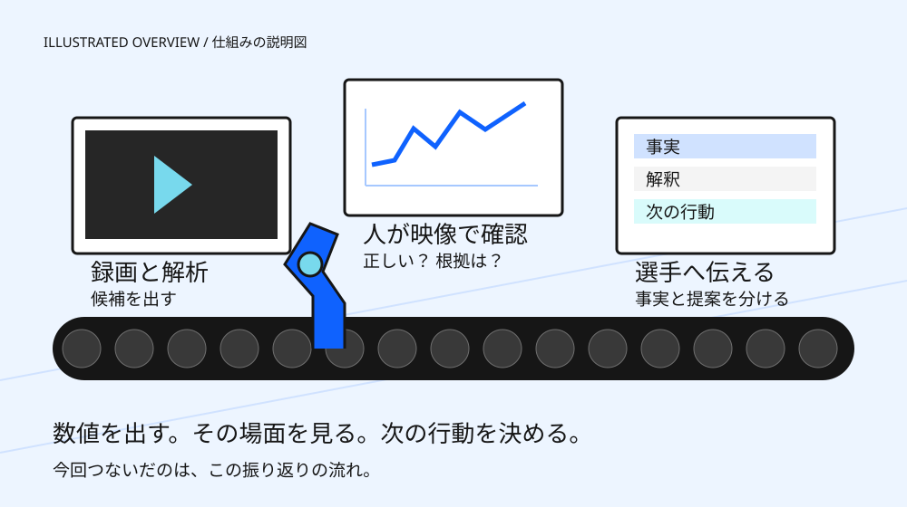
01 / WHY
数字だけでは、
選手に伝えることは決まらない。
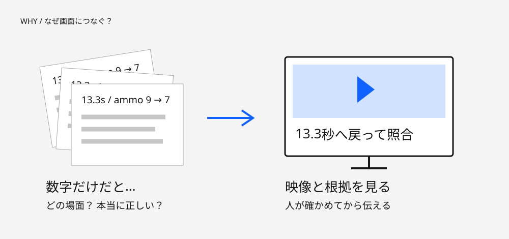
関連するLinear課題の背景
TAA-32はレビュー画面、TAA-28は戦闘候補の区間化、TAA-30は根拠付きの戦闘集計。TAA-29の精度評価と、TAA-33の非発砲時のHP・シールド追跡が、判断の土台になります。
10月29日の取得時点で5件とも進行中。今回のローカル試作の確認は、各課題の全受入条件の達成を意味しません。
02 / REAL SCREENS
まず、実画面を見てみる。
PR35の画面設計に、既存の48秒解析を表示。画像はタップで拡大できます。
全体像をつかむ
87候補・253発の差分・18照合点を入口に。
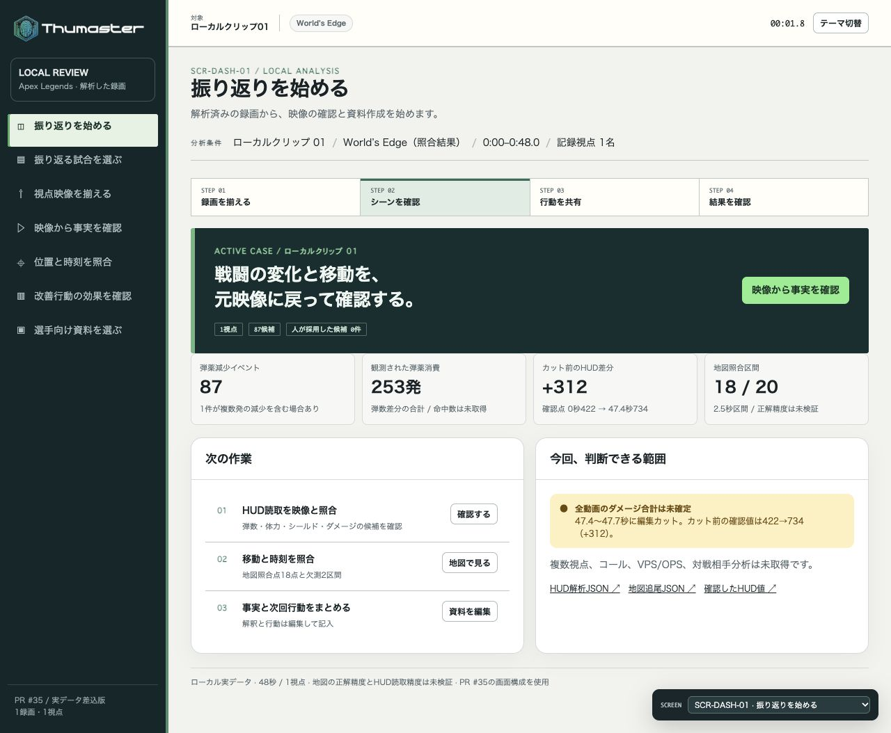
対象の録画を確認
48秒・1視点。試合全体の結果ではない。
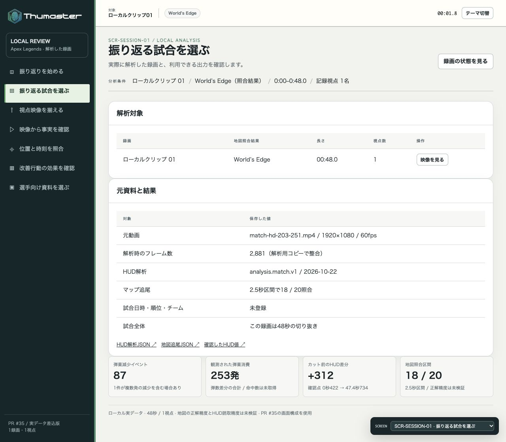
登録情報の不足を見る
画面はあるが、入力フォームは未実装。
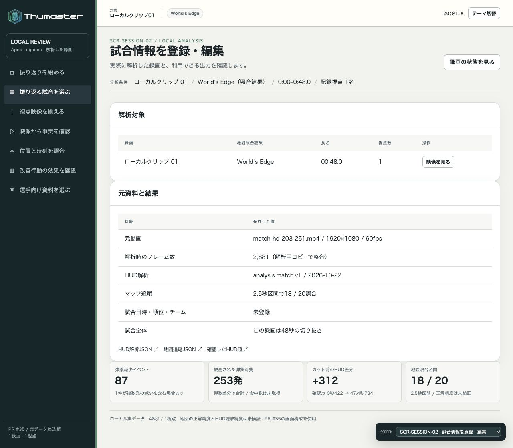
取得状態を確認
読めたものと、欠測したものを分ける。
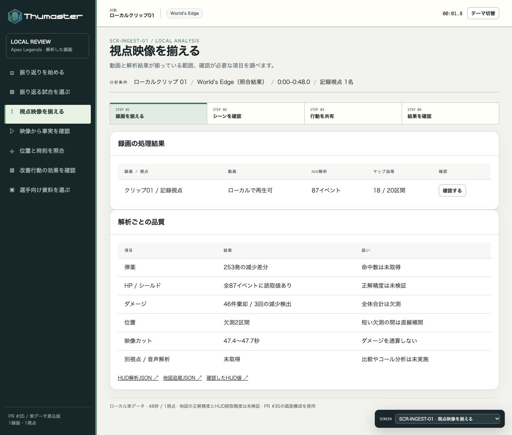
状態の変化を見る
推移は見える。前回比と改善効果は未検証。
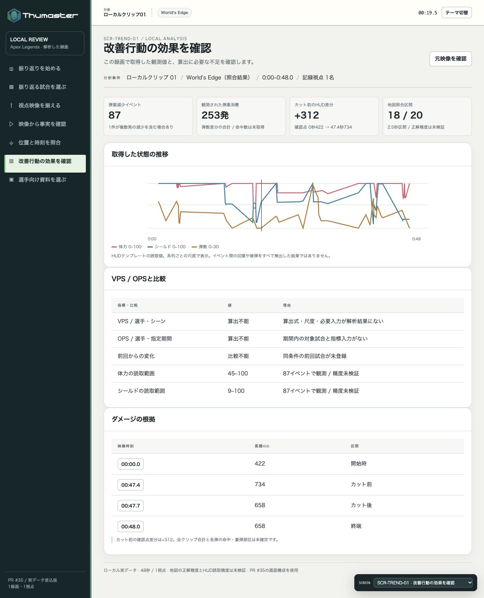
資料へ進む
解析の結果から、ローカル下書きを開く。
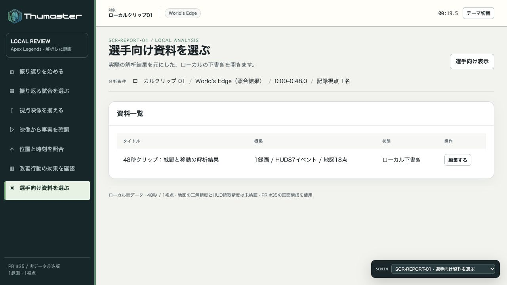
03 / HOW IT CONNECTS
気になる瞬間を、
映像と地図で行き来する。
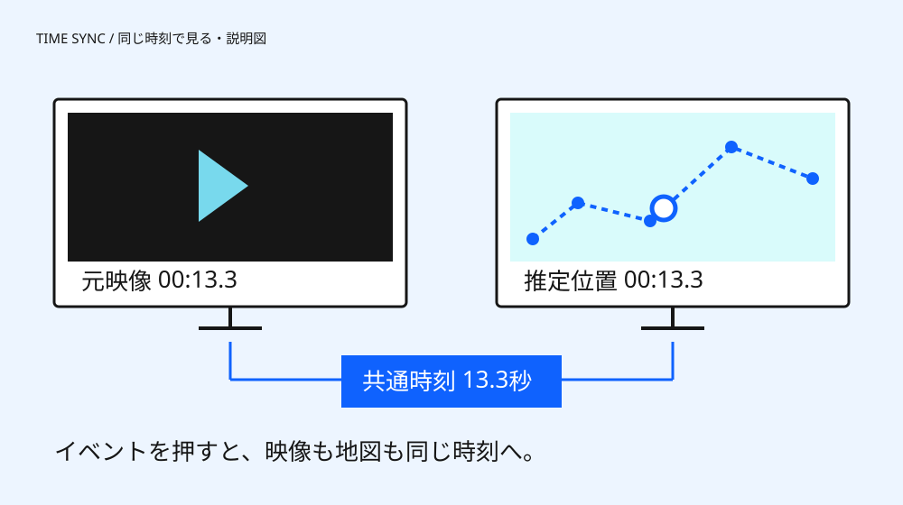
実ブラウザーで時刻の引き継ぎを確認済み。地図の点間は直線補間で、実際の経路を確定したものではありません。
全10画面の遷移と保存の流れ
ホーム → 試合一覧 → 試合情報 → 取得状態 → 映像レビュー → 地図 → 推移 → 資料一覧 → 資料編集 → 選手向けプレビュー。
判定・下書きはブラウザー内に保存。サーバー保存、別端末との共有、共有先・期限の設定は未実装です。映像を含む操作スクショ7枚は、未承認のためローカル完全版で保管しています。
04 / WHAT THE NUMBERS MEAN
表示できた数値と、
まだ言い切れないこと。
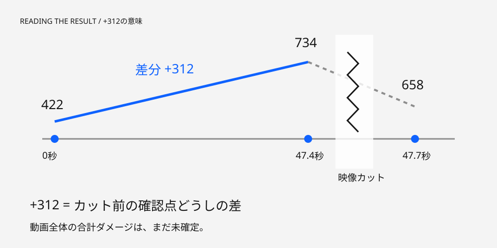
見えるようになった
87件の弾薬減少イベント
イベント時のHP・シールド
18点の地図照合と時刻連動
まだ確定できない
命中数・全体ダメージ
位置やHUD読取の正解精度
前回より上達したか
253発は「観測された弾数差分の合計」。命中数や、検証済みの射撃数ではありません。18/20区間の取得も「位置の正解率90%」ではありません。
05 / NEXT MOVE
次は、信頼して使える状態へ。
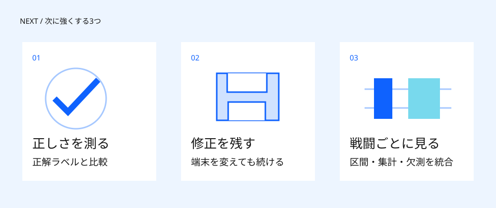
検証結果と詳しい説明
ローカル試作の自動テスト7グループ、工場の既存40テストが成功。イベント・映像・地図の時刻連動、下書き保存、全10画面を確認しました。
本番統合、代表動画での独立した精度評価、実機iPhoneでの動画再生、チーム共有は未確認です。新しい推論は実行していません。
背景・条件・各画面の詳しい記録を読む